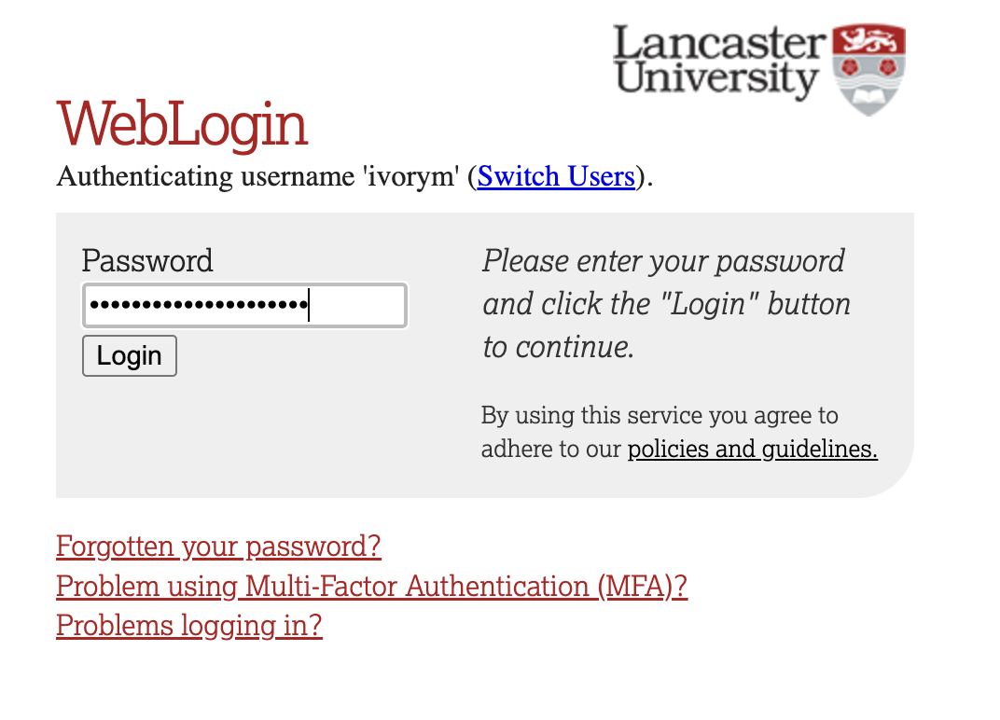
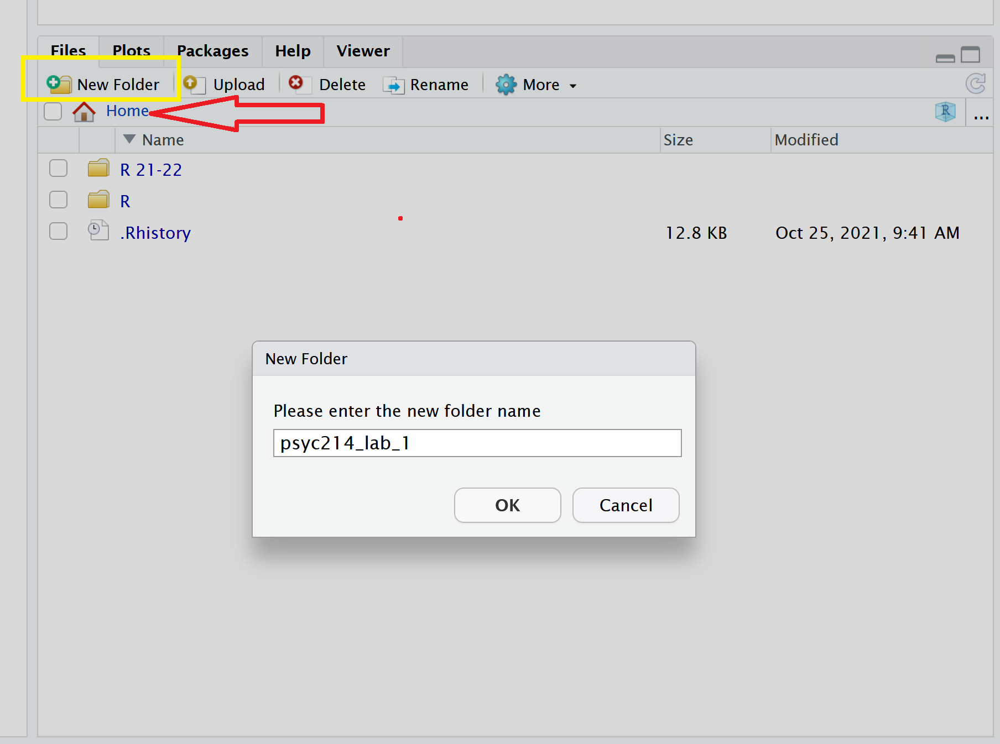
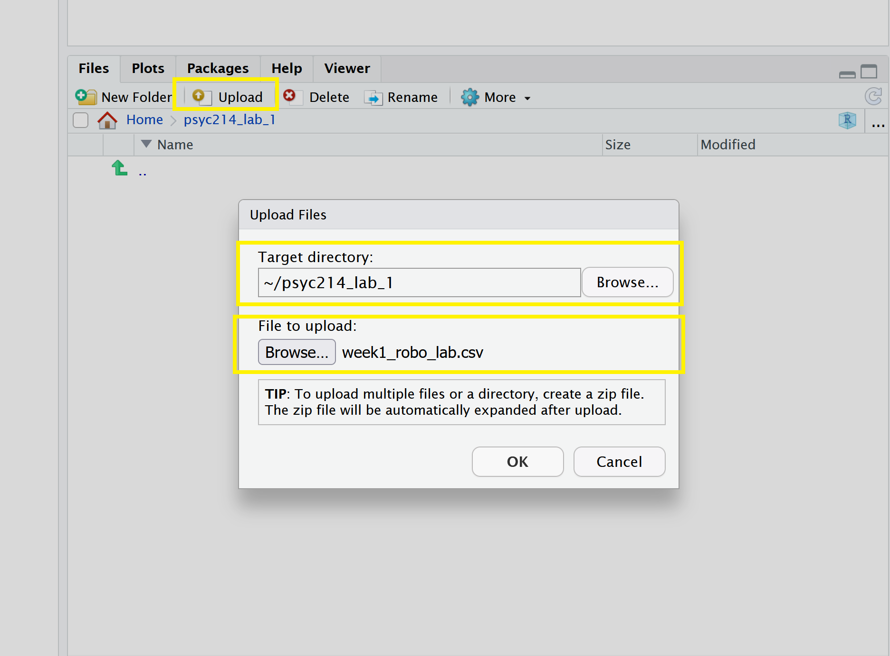
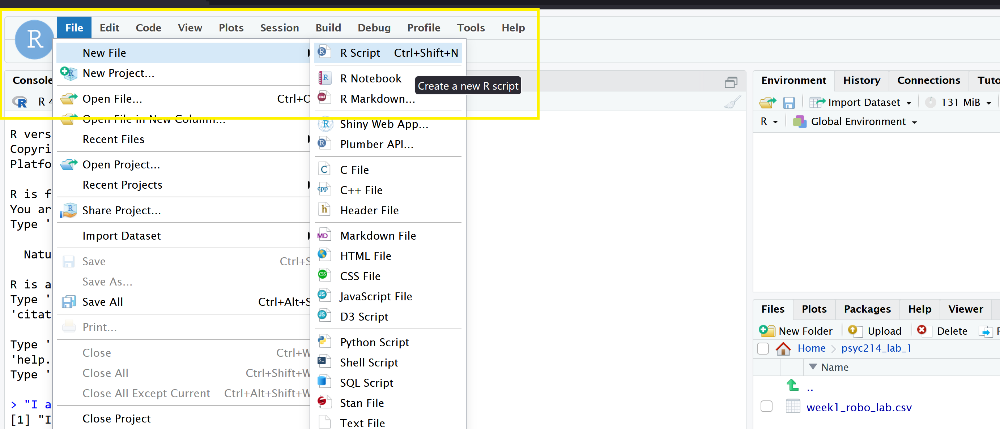
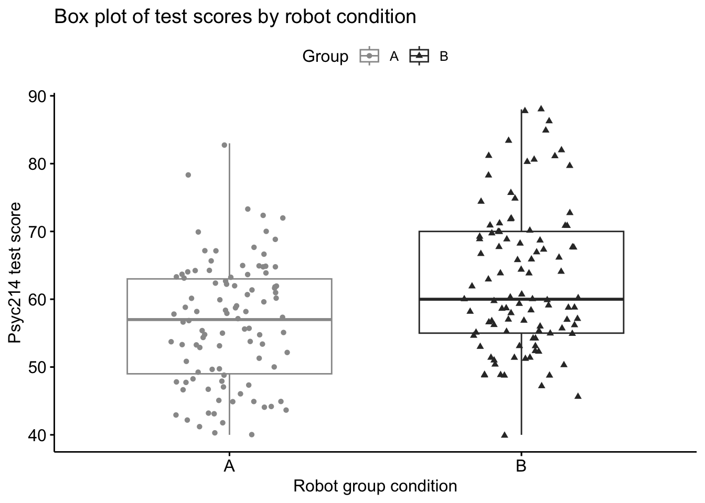
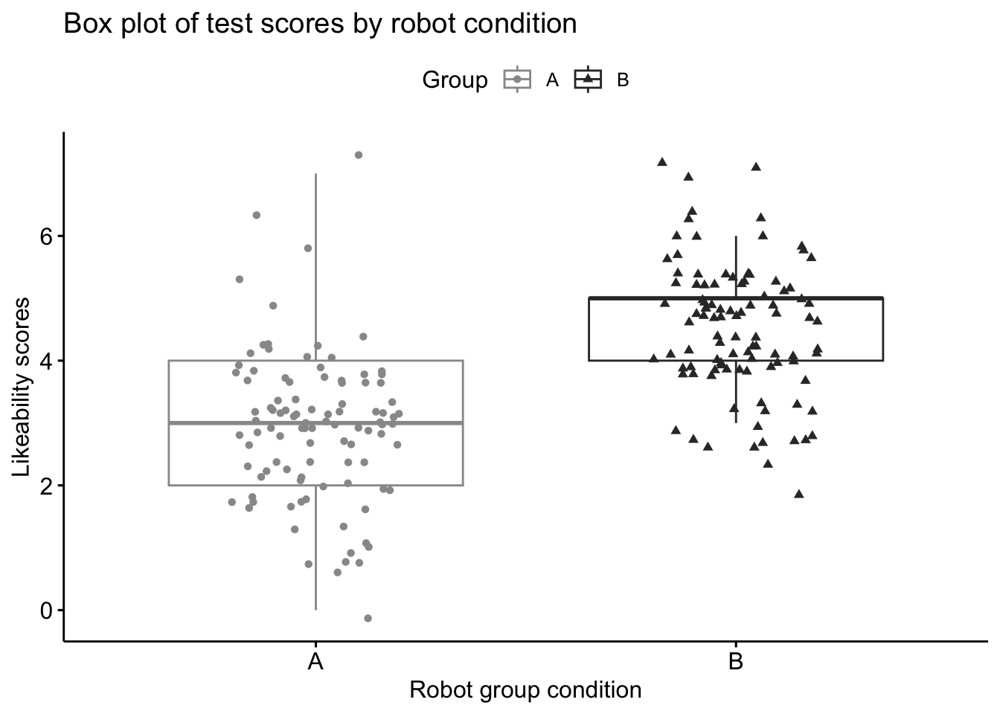

setwd("/PSYC214")1. Measurement, Variance and Inferential Statistics
Sam Russell, Mark Hurlstone
Lab
Welcome back to Lancaster University and congratulations on your progression to Year 2!
This will be the first lab session for Psyc214 - Statistics for Psychologists. In these lab sessions you will work from sheets (like this one) which detail activities and provide hands on experience of working and problem solving in R. At times these sheets will offer step-by-step instructions of how to wrangle data and to run a relevant command or analysis. At other times, and to reinforce learning, you will be asked to ‘fill in the gaps’ yourselves or to rewrite the code to solve a new problem. Myself (Sam Russell), Mark Hurlstone and an apt team of GTAs will be on hand to help you through this journey - so please do not panic - you’re never alone. In Psyc214, we also encourage peer engagment and joined problem solving - so please do not hesitate to ask for help from another on your table or to work together in small groups. Right, that enough for now, so let’s get started!💪
1 - General Introduction
“Once more unto the breach, dear friends, once more” | King Henry V, by William Shakespeare.

The formation of rust can occur quickly and within minutes or slowly, over many years. It all depends on the material that is rusting, it’s lack of use and the environment!
In this analogy, let’s consider our ‘R brains’ as the material vulnerable to rusting. With individual differences, some of us may remember more of last year’s statistic course than others - and that’s completely normal.
When considering repeated use and our environments, it is also unlikely that many of us have interacted with R and statistics over the intervening summer months. Quite sensibly we’ve enjoyed a non-academic environment - holidays, summer jobs, commitments to family and friends, these are all important things that have rightly taken priority!
It therefore an entirely natural process for folks to feel rusty and hesitant when re-engaging with R and statistics. As such, in this first session, let’s get re-accustomed with our old friend ‘R’.
1.1 Access to R Studio
You will recall from last year that R Studio is a free, open-source data science engine that works as a giant calculator on steroids. Beyond number crunching, R studio allows you to organise your data, construct beautiful tables and graphs, as well as document your code and findings for others to inspect.
To log in to the R server, first make sure that you have the VPN switched on, or you will need to be connected to the university network (Eduroam). To set up the VPN, follow ISS instructions here or connecting to Eduroam here.
When you are connected, navigate to https://psy-rstudio.lancaster.ac.uk, where you will be shown a login screen that looks like the below. Click the option that says “Sign in with SAML”.

This will take you through to the University login screen, where you should enter your username (e.g. ivorym) and then your university password. This will then redirect you to the R server where you can start using RStudio!


Note
If you have already logged in through the university login already, perhaps to get to the portal, then you may not see the username/password screen. When you click login, you will be redirected straight to RStudio. This is because the server shares the login information securely across the university.
1.2 Creating a folder for today’s session
Once you are logged into the server, create a folder for today’s session. This will be where we will house today’s data and script. This will allow you to save you store your work and return at a later date (for example, around exam time - wink wink)
Navigate to the bottom right panel (see figure below) and click Home. Next, under the Files option select the New Folder option. Name the new folder psyc214_lab_1. Please ensure that you spell this correctly otherwise when you set the directory using the command given below it will return an error.

1.3 Uploading today’s data file and creating a script
Now that you have created a folder for today’s session, it’s time to add the Week 1 data file. You can download the file from here.
Next, in the RStudio Server open your new psyc214_lab_1 folder. When in the new folder, select the Upload tab (see figure below). This will present a box that will ask where the data is that you want to upload. Click on Browse, find the week1_robo_lab.csv file on your desktop and click OK.

So we can save this session on the server, click File on the top ribbon and select New project. Next, select existing directory and name the working directory ~/psyc213_lab_1 before selecting create project.
Finally, open a script for executing today’s coding exercises. Navigate to the top left pane of RStudio, select File -> New File -> R Script. Working from a script will make it easier to edit your code and you will be able to save your work for a later date.

Be sure to save the script using the File -> Save As….
1.4 Setting the working directory and opening the data file
A working directory is the default location or folder on your computer/server by which R will read/save any files. It can be set with the following R code:
setwd("~/psyc214_lab_1")Now you’ve downloaded the data and set the working directory it’s time to open the data file in R studio. To do this, please type the following code:
lab1_data <- read.csv("week1_robo_lab.csv")where ‘lab1_data’ is the name we’ve assigned that R will recognise when it calls up our data, read.csv is the R function to import the data, and ‘week1_robo_lab.csv’ is the name of the original data file you downloaded and stored.
Note. During the rest of this session, you will not need to refer to the original downloaded .csv data file. R has all the information stored under the ‘lab1_data’ variable. Further note, you could have called ‘lab1_data’ by pretty much any name you like… ‘df1’, ‘robo_1’, ‘I.love.stats.com’, etc. - the name is somewhat arbitrary. For the purpose of this lab session and for ease of read, ‘lab1_data’, is perhaps more suitable.
1.5 loading the relevant library
Finally, let’s load the relevant libraries that we will be using in today’s session:
library(tidyverse)Warning: package 'ggplot2' was built under R version 4.4.1library(rstatix)
library(ggpubr)2 - Today’s lab activities
Now that you have loaded the dataset, let’s have a play.
2.1 Some background information about the dataset

In this lab session, we will examine the fictitious ‘robo_lab’ dataset. Here, a team of researchers wanted to know whether LU statistics students would respond well to a new, ambitious initiative to deploy a team of synthetic robots as lab assistants.
2.2 Study manipulation
The research team developed two robot prototypes and wanted to test which prototype would be optimal for classroom teaching. In a controlled experiment, the researchers randomly assigned groups of students either Robot A(lpha) or Robot B(eta). Note this is one factor design (Robot assignment) made of two levels (Robot A or Robot B).
Those individuals assigned Robot A(lpha) were denoted as belonging to ‘Group A’.
Those individuals assigned Robot B(eta) were denoted as belonging to ‘Group B’.
Note. The groups are mutually exclusively - i.e., a participant was assigned to either Group A/Robot A or Group B/Robot B, not both.


2.3 Dependent (a.k.a. Outcome) variables
Next, the researchers required some outcome measures to evaluate whether indeed the students had responded more positively toward one robot prototype over another.
The research team settled on two dependent variables (or outcome measures). These measured student stats competence (something important!) and attitudes towards teaching support (something also very important!).
DV1: Student stats competence was measured by a Psyc214 test score; ranging between 40-100.
DV2: Student attitudes towards the robot lab assistant was assessed with a likert scale response between 1-7; with 1 = ‘strongly dislike’ and 7 = ‘strongly like’.
2.4 Predictions of the research team
The research team had their own expectations for which robot would be best received by students. Specifically, they predicted that:
Individuals assigned Robot B(eta) would score significantly higher in their Psyc214 tests (Hypothesis 1)
Robot B(eta) would be significantly more liked than Robot(A)lpha (Hypothesis 2)
The researchers expected that this difference would be explained by Robot B(eta)’s closer resemblance to other human beings. Indeed, prior to the study, independent raters had reliably agreed that Robot B(eta) resembled a human being significantly more than Robot A(lpha).
2.5 Refamiliarising with some basic features
Now that you have opened the dataset and are aware of what the different variables for this study are, it’s time to explore.
In this first refresher session, we will be refamiliarising ourselves with some of the key functions and features learned in last year stats classes.
Earlier, we loaded the package dplyr, which is readily accessible from the tidyverse collection. This package allows us to use some nifty functions such as:
- pipes
%>%
arrange()summary()sd()- IQR, etc.
2.6 Examining and ordering data
Now that we have our pieces in play, let’s take a look at the data.
We first want to get a brief overview of what the data set looks like. To do this, we use the use the head() function, which displays the first rows present in the data frame.
To view these first rows, please apply the following code:
head(lab1_data) ID Group Likeability Score
1 1 A 3 55
2 2 A 2 72
3 3 A 2 45
4 4 A 3 50
5 5 A 2 45
6 6 A 5 63This shows us the first 6 rows. Note, while the default is six, you can also specify the number of rows as follows - please try it out.
head(lab1_data, n=12)Great. We can now see the first 12 rows of data. One thing that is noticeable, however, is that the data are ordered by participant ‘ID’. Say we want to get an overview of our data where we can see data ordered by the from lowest Psyc214 test score to highest. We can arrange data this way using the arrange() function, were we include ‘Score’ as the variable of interest. Please try the following:
lab1_data %>% arrange(Score) ID Group Likeability Score
1 33 A 2 40
2 60 A 1 40
3 165 B 5 40
4 81 A 3 41
5 46 A 3 42
6 52 A 2 42
7 18 A 4 43
8 44 A 3 43
9 95 A 3 43
10 50 A 3 44
11 53 A 1 44
12 87 A 3 44
13 3 A 2 45
14 5 A 2 45
15 7 A 4 45
16 26 A 1 45
17 28 A 4 46
18 126 B 5 46
19 39 A 4 47
20 61 A 1 47
21 66 A 4 47
22 85 A 3 47
23 133 B 3 47
24 51 A 3 48
25 57 A 2 48
26 86 A 3 48
27 96 A 4 48
28 12 A 6 49
29 40 A 3 49
30 144 B 4 49
31 162 B 4 49
32 167 B 5 49
33 172 B 4 49
34 192 B 5 49
35 4 A 3 50
36 43 A 2 50
37 79 A 2 50
38 173 B 3 50
39 191 B 5 50
40 71 A 7 51
41 91 A 4 51
42 140 B 5 51
43 147 B 6 51
44 166 B 5 51
45 170 B 6 51
46 200 B 5 51
47 24 A 3 52
48 121 B 6 52
49 176 B 4 52
50 17 A 5 53
51 38 A 4 53
52 42 A 2 53
53 62 A 2 53
54 97 A 4 53
55 105 B 4 53
56 110 B 6 53
57 131 B 7 53
58 13 A 1 54
59 64 A 3 54
60 74 A 2 54
61 101 B 4 54
62 194 B 4 54
63 1 A 3 55
64 31 A 3 55
65 37 A 1 55
66 49 A 2 55
67 70 A 3 55
68 111 B 5 55
69 128 B 6 55
70 155 B 4 55
71 163 B 3 55
72 174 B 4 55
73 177 B 5 55
74 72 A 1 56
75 82 A 3 56
76 104 B 3 56
77 136 B 6 56
78 151 B 3 56
79 184 B 5 56
80 14 A 3 57
81 15 A 2 57
82 20 A 3 57
83 45 A 3 57
84 106 B 5 57
85 135 B 4 57
86 139 B 4 57
87 149 B 4 57
88 153 B 4 57
89 168 B 5 57
90 23 A 3 58
91 35 A 4 58
92 36 A 3 58
93 48 A 2 58
94 76 A 4 58
95 109 B 4 58
96 113 B 7 58
97 180 B 5 58
98 9 A 4 59
99 54 A 2 59
100 55 A 3 59
101 102 B 3 59
102 118 B 3 59
103 125 B 5 59
104 150 B 4 59
105 186 B 5 59
106 190 B 6 59
107 16 A 3 60
108 69 A 2 60
109 83 A 3 60
110 90 A 2 60
111 115 B 5 60
112 120 B 4 60
113 143 B 4 60
114 185 B 4 60
115 187 B 5 60
116 193 B 4 60
117 22 A 2 61
118 59 A 3 61
119 92 A 4 61
120 161 B 5 61
121 21 A 3 62
122 27 A 2 62
123 32 A 2 62
124 75 A 3 62
125 77 A 3 62
126 89 A 4 62
127 148 B 5 62
128 6 A 5 63
129 80 A 4 63
130 99 A 3 63
131 100 A 4 63
132 158 B 7 63
133 19 A 2 64
134 25 A 4 64
135 41 A 3 64
136 56 A 2 64
137 68 A 3 64
138 98 A 4 64
139 122 B 5 64
140 152 B 4 64
141 181 B 4 64
142 188 B 4 64
143 58 A 3 65
144 67 A 0 65
145 78 A 3 65
146 84 A 4 65
147 88 A 4 65
148 93 A 4 66
149 119 B 5 66
150 137 B 5 66
151 196 B 5 66
152 29 A 3 67
153 34 A 4 67
154 63 A 3 67
155 130 B 2 67
156 171 B 3 67
157 199 B 6 67
158 73 A 3 68
159 103 B 3 68
160 114 B 6 68
161 123 B 5 68
162 195 B 5 68
163 8 A 4 69
164 116 B 5 69
165 129 B 3 69
166 164 B 4 69
167 198 B 3 69
168 47 A 3 70
169 65 A 1 70
170 112 B 5 70
171 141 B 5 70
172 154 B 3 70
173 157 B 4 70
174 132 B 6 71
175 146 B 4 71
176 179 B 2 71
177 182 B 5 71
178 2 A 2 72
179 11 A 3 72
180 169 B 4 72
181 197 B 5 72
182 94 A 3 73
183 107 B 3 73
184 127 B 5 74
185 159 B 4 75
186 142 B 5 76
187 30 A 6 78
188 160 B 6 78
189 117 B 5 80
190 189 B 4 80
191 108 B 3 81
192 124 B 4 81
193 138 B 5 81
194 145 B 4 82
195 10 A 1 83
196 156 B 4 83
197 183 B 4 85
198 134 B 5 86
199 175 B 5 88
200 178 B 5 88You will note that this outputs 100+ data rows showing the values of over 100 of our participants.
This can be quite a whooper!
If we want to make this output more manageable we could always add an additional >%> pipe command which combines both arrange and head.
For example the code below, combining arrange() and head() allows us order the data based on lowest score and then to display only the top 10 results.
lab1_data %>% arrange(Score) %>% head(n=10) ID Group Likeability Score
1 33 A 2 40
2 60 A 1 40
3 165 B 5 40
4 81 A 3 41
5 46 A 3 42
6 52 A 2 42
7 18 A 4 43
8 44 A 3 43
9 95 A 3 43
10 50 A 3 44Phew. This is more manageable.
This table provides some interesting information. We can see that the lowest scores were 40, which was the bottom cutoff point of our measurement scale.
A quick eyeballing of the data rows suggests the lowest 10 test scores predominately have participants who were assigned to Group A(lpha). In fact, 9 out of 10 of the lowest scores belonged to individuals from Group A.
It would also be prudent to check the top 10 highest scores and to get a feel for what the top marks were like. We can again order our data using the arrange() function. This time however, we add the term arrange(desc()) to show that we are asking R for descending ordering.
Please try the following command to examine the top scorers
lab1_data %>% arrange(desc(Score))You will note in your own output, that the scores are once again showing over 100 values!
To make this more manageable, please try writing your own code combining the arrange(desc()) function, a pipe %>% and the head(n = x) function. If stuck, refer to the command we used higher up.
# STUDENT COMPLETES# ANSWER CODE
lab1_data %>% arrange(desc(Score)) %>% head(n=10) ID Group Likeability Score
1 175 B 5 88
2 178 B 5 88
3 134 B 5 86
4 183 B 4 85
5 10 A 1 83
6 156 B 4 83
7 145 B 4 82
8 108 B 3 81
9 124 B 4 81
10 138 B 5 81You now should have an output of descending scores which are more manageable.
ID Group Likeability Score
1 175 B 5 88
2 178 B 5 88
3 134 B 5 86
4 183 B 4 85
5 10 A 1 83
6 156 B 4 83
7 145 B 4 82
8 108 B 3 81
9 124 B 4 81
10 138 B 5 81Try eyeballing these scores and group IDs to see whether the higher scores tend to be associated with one group over another. Any thoughts? Share them with your inner self or a class mate.
OK, so we’ve organized the data we have a bit, but let’s also think about adding to the data by creating a new variable that will help us understand our data. To do this, let’s do a data transformation using the mutate() function.
Let’s create a new variable that categorizes the score of each participant into low, medium, and high categories. These categories are somewhat arbitrary, and we could really name and value them however we like. For the purpose of this exercise let’s say that scores less than 50 are “Low” scores, between 51-70 “Medium” and > 70 “High”. Please do so by entering the following code
lab1_data <- lab1_data %>%
mutate(Score_Category = case_when(
Score <= 50 ~ "Low",
Score > 50 & Score <= 70 ~ "Medium",
Score > 70 ~ "High"
))Ok! I’m pretty sure you’ve now created a new variable entitled ‘Score_Category’. However, it would be great to check and be sure. Please use the head() function to check your dataset and see how it looks.
# TRY ENTERING YOUR OWN CODE HERE. HINT. USE head() and the name of our datasetIf done correctly, you should received the following output:
head(lab1_data) ID Group Likeability Score Score_Category
1 1 A 3 55 Medium
2 2 A 2 72 High
3 3 A 2 45 Low
4 4 A 3 50 Low
5 5 A 2 45 Low
6 6 A 5 63 Medium2.7 Assessing the descriptives
As of yet, we have not examined the basic descriptive statistics of our data, so let’s take a look now.
We can compute the minimum and maximum values, 1st and 3rd quartiles, median and mean all at once using the summary() function:
summary(lab1_data) ID Group Likeability Score
Min. : 1.00 Length:200 Min. :0.000 Min. :40.00
1st Qu.: 50.75 Class :character 1st Qu.:3.000 1st Qu.:53.00
Median :100.50 Mode :character Median :4.000 Median :59.00
Mean :100.50 Mean :3.725 Mean :59.69
3rd Qu.:150.25 3rd Qu.:5.000 3rd Qu.:66.00
Max. :200.00 Max. :7.000 Max. :88.00
Score_Category
Length:200
Class :character
Mode :character
There are still a number of descriptives which may be interesting, but that the summary() function does not provide, however.
For example, we may be interested in … (remember from last lecture ;) …:
- the range of our data points (i.e., the difference between the lowest and highest values)
- the interquartile range of data (i.e., the difference between the first and third quartiles)
- the standard deviation (i.e., the dispersion of a dataset relative to its mean, that being the square root of the variance)
These can all be calculated relatively easily with the following functions:
- the range of our data points:
range() - the interquartile range:
IQR() - the standard deviation:
sd()
range(lab1_data$Score)[1] 40 88IQR(lab1_data$Score)[1] 13sd(lab1_data$Score)[1] 10.29689Note that this only provides the information for the ‘Scores’ dependent variable - I.e., DV1.
We do not know what the respective values are for the ‘Likeability’ dependent variable (DV2).
If we want to examine multiple variables simultaneously, we can use the sapply() function, which can take multiple lists/vector/data frames as inputs within a single command. Nifty.
Here, we need to specify which columns we would like to assess. In our data the ‘Scores’ dependent variable (DV1) and ‘Likeability’ dependent variable (DV2) are columns 4 and 3 of the datasheet, respectively.
Let’s try in with the range.
sapply(lab1_data[, 4:3], range) Score Likeability
[1,] 40 0
[2,] 88 7Here we see that the range in Psyc214 test scores (i.e., the min and max scores in the cohort of all participants) ranged between 40 and 88.
Also, the min and max ratings for the likeability scores were between 0 and 7, respectively.
Now, please try to apply the code above yourself, but change ‘range’ with the standard deviation ‘sd’ argument to get the standard deviation for both the score and likeability variables simultaneously.
# STUDENT COMPLETESIf done correctly, you should received the following output:
# ANSWER CODE
sapply(lab1_data[, 4:3], sd) Score Likeability
10.296888 1.344774 
Fig.11 - Hold up!
STOPPPPP!!!!!! There is a problem here with the descriptive statistics for the likeability score. Can you figure which part of it doesn’t make sense? When you think you know, please tell a study friend. We won’t correct it in today’s session, but in future work, we need to correct squirrely data.
2.8 Descriptives by group condition
Now that we have some information regarding the overall data, we can rejoice.
Well only briefly…
Although this information is useful, it gives information regarding all data points and does not generate these values based on the two assigned independent groups - i.e., the two levels (Group Robot A, Group Robot B) of our single factor (Robot Assignment).
Although there are work arounds for this, simpler functions are available in the rstatix() package (previously loaded).
Using the package’s group_by() function and pipes %>% we can ask R to separate our data based on the group assigned. Note, here the name of the grouping variable for our dataset is ‘Group’.
Let’s ask for the mean for our two groups with the following bit of code. First we tell R we are using the lab1_data. Then we say within this data set we want to separate the data by the ‘Group’ variable. Finally we ask for summary stats for the DV1 the Score. We will ask only for the mean.
lab1_data %>%
group_by(Group) %>%
get_summary_stats(Score, type = "mean")# A tibble: 2 × 4
Group variable n mean
<chr> <fct> <dbl> <dbl>
1 A Score 100 56.6
2 B Score 100 62.8Great. Now let’s do the same again, but this time we will ask for summary statistics for both the Score (DV1) and Likeability (DV2) variables. Furthermore, let’s also ask for the sd, min, max and iqr.
lab1_data %>%
group_by(Group) %>%
get_summary_stats(Score, Likeability, show = c("mean", "sd", "min", "max", "iqr"))# A tibble: 4 × 8
Group variable n mean sd min max iqr
<chr> <fct> <dbl> <dbl> <dbl> <dbl> <dbl> <dbl>
1 A Score 100 56.6 9.05 40 83 14
2 A Likeability 100 2.94 1.15 0 7 2
3 B Score 100 62.8 10.6 40 88 15
4 B Likeability 100 4.51 1.03 2 7 1Ok, perfect. This now tells us a lot of information. For example, we can see that the mean test scores for Group A and B are 56.6 and 62.8 respectively. On reflection, and considering the importance of getting a nice score, these means do seem quite different from one another.
3. And more
3.1 Visualising data
As a next step, let’s plot the data and see the distribution of data points in visual form. To do this, we’ve already loaded the excellent data visualization package ggpubr.
To plot the data we use the ggboxplot() function. First we are required to say what dataset we’ll be using, which is again ‘lab1_data’. Next we type ‘main=’ to specify the title for the plot. Let’s call the plot “Box plot of test scores by robot condition”. We then need to specify what data we would like to use for each axis. For the x-axis we would like to plot the different groups, so let’s add x = “Group”. Our y-axis will be the “Score”. We can colour the groups also and add shapes to data points. Finally, let’s give the x-axis and y-axis each a descriptive label. “Robot group condition” and “Psyc214 test score” seem appropriate here.
# Box plot of test scores by Robot Condition
ggboxplot(lab1_data,main="Box plot of test scores by robot condition",
x = "Group", y = "Score", #variables for axes
color = "Group", palette =c("#999999", "#333333"), #colour of data
add = "jitter", shape = "Group", # shape of data
xlab="Robot group condition", ylab="Psyc214 test score") #labels for axes
Observing the spread of data points for Group A and B, respectively, we can see trends in which Group B tends to have more data points clustered higher on the test score axis than Group A. Group A has more data points clustered lower on the test score axis than Group B and these distributions are reflected by the boxplots. Again it seems we have a signficant difference, but we will need a statistical test to be certain.
3.2 Independent samples \(t\)-test
To get to the bottom of this we need to perform an independent samples \(t\)-test. This inferential statistical test is appropriate when you want to examine whether there are any statistically significant differences between the means of two unrelated groups. This can be run using the t_test() function, where ‘Score’ is our y (dependent variable) and ‘Group’ is our predictive factor x (independent variable).
# independent samples t-test
#t_test(Score ~ Group) # where y is numeric Score and x is a binary factor
# Compute t-test
t.test(formula = Score ~ Group, pool.sd = FALSE, var.equal = TRUE, data = lab1_data)
Two Sample t-test
data: Score by Group
t = -4.4152, df = 198, p-value = 1.658e-05
alternative hypothesis: true difference in means between group A and group B is not equal to 0
95 percent confidence interval:
-8.896848 -3.403152
sample estimates:
mean in group A mean in group B
56.61 62.76 The output provides the t-value and it’s 95% confidence interval - i.e., we can be 95% certain that the true value of t falls within the the lower and upper confidence intervals. We also get the means of our groups, the degrees of freedom for our t-test and the p-value. This p-value is significantly lower than 0.05 meaning that we reject the null hypothesis - i.e., we accept that the true difference is not roughly equal to zero. As such, there is a statistical difference in Psyc214 assessment scores between the two groups. What we are yet to discover is whether this represents a small, moderate or large effect.
To calculate the effect size, where 0.2 = small effect, 0.5 = moderate effect, 0.8 = large effect (Cohen, 1988), we use the cohens_d() function.
# Cohen's d effect size calculation
cohens_d(Score ~ Group, # Formula
data = lab1_data) # Dataframe containing the variables# A tibble: 1 × 7
.y. group1 group2 effsize n1 n2 magnitude
* <chr> <chr> <chr> <dbl> <int> <int> <ord>
1 Score A B -0.624 100 100 moderate This output shows us that we have a moderate negative effect of -0.62 ; note. it is negative because of the order of our factors - i.e., Group A (which is presented first in our equation) has a lower set of scores than Group B. As you typically report the effect size as a value between 0-1 we need to treat the result as an absolute value, meaning we ignore the minus symbol when reporting our results.
3.3 Reporting the results of the independent samples \(t\)-test in APA format
All results should be written up in accordance with the American Psychological Association’s (APA) guidance. This ensures that your results are easy to interpret and that all the relevant information is present for those wishing to review/replicate your work.
The current results can be reported as following: “An independent samples \(t\)-test was carried out to examine whether there were statistical differences in the Psyc214 assessment scores between those students assigned Robot A(lpha) and those assigned Robot B(eta). This test was found to be statistically significant, t(198)= -4.42, 95% CI [-8.90, -3.40], p < .001, d = 0.62. This effect size represents a moderate effect (Cohen, 1988). These results indicate that individuals assigned Robot A(lpha) (M = 56.61, SD = 9.05) typically received lower Psyc214 assessment scores than those individuals assigned Robot B(eta) (M = 62.76, SD = 10.60)”
4. Further tasks
- repeat the steps in ‘2.8 Descriptives by group condition’, this time examining the summary statistics for our second dependent variable - ‘Likeability’.
# ANSWER CODE
lab1_data %>%
group_by(Group) %>%
get_summary_stats(Likeability, type = "mean")# A tibble: 2 × 4
Group variable n mean
<chr> <fct> <dbl> <dbl>
1 A Likeability 100 2.94
2 B Likeability 100 4.51- repeat the steps in ‘3.1 Visualising data’, this time creating box plots for our second dependent variable - ‘Likeability’. Rename the title and axes to something more suitable and perhaps even change the colour of data points. Describe the trends in data to a classmate or your inner self.
# ANSWER CODE
# Box plot of likeability scores by Robot Condition
ggboxplot(lab1_data,main="Box plot of test scores by robot condition",
x = "Group", y = "Likeability", #variables for axes
color = "Group", palette =c("#999999", "#333333"), #colour of data
add = "jitter", shape = "Group", # shape of data
xlab="Robot group condition", ylab="Likeability scores") #labels for axes
- compute an independent t-test (steps 3.2) to examine whether there are any statistical differences between the means of our two groups in their Likeability ratings. Write up the results in APA style.
# ANSWER CODE
# independent 2-group t-test
#t_test(Score ~ Group) # where y is numeric Score and x is a binary factor
# Compute t-test
t.test(formula = Likeability ~ Group, pool.sd = FALSE, var.equal = TRUE, data = lab1_data)
Two Sample t-test
data: Likeability by Group
t = -10.155, df = 198, p-value < 2.2e-16
alternative hypothesis: true difference in means between group A and group B is not equal to 0
95 percent confidence interval:
-1.874879 -1.265121
sample estimates:
mean in group A mean in group B
2.94 4.51 # Cohen's d effect size calculation
cohens_d(Likeability ~ Group, # Formula
data = lab1_data) # Dataframe containing the variables# A tibble: 1 × 7
.y. group1 group2 effsize n1 n2 magnitude
* <chr> <chr> <chr> <dbl> <int> <int> <ord>
1 Likeability A B -1.44 100 100 large - In section 2.6 we used the
mutate()function to create a new variable that categorized the score of each participant into low, medium, and high categories. As, I mentioned, these categories are somewhat arbitrary and you can really choose any values and any labels that work for you. Let’s pretend the university have been in touch and said that they have agreed on a new marking rubric and would like you to update your data.
Please, use the mutate() function and the example from 2.6 to make a new variable called ‘Score_Band’ where: Marks below 49 is ‘Fail’ Marks between 49 and 58 is ‘Pass’ Marks between 59-68 is ‘Merit’ Marks greater than 69 is ‘Distinction’. Then, check that the command worked and that there is now a new variable in your data set called ‘Score_Band’ using the head() function.
# ANSWER CODE
lab1_data <- lab1_data %>%
mutate(Score_Band = case_when(
Score <= 48 ~ "Fail",
Score > 48 & Score <= 58 ~ "Pass",
Score > 58 & Score <= 68 ~ "Merit",
Score > 69 ~ "Distinction"
))
head(lab1_data) ID Group Likeability Score Score_Category Score_Band
1 1 A 3 55 Medium Pass
2 2 A 2 72 High Distinction
3 3 A 2 45 Low Fail
4 4 A 3 50 Low Pass
5 5 A 2 45 Low Fail
6 6 A 5 63 Medium Merit- before you finish, make sure you save a copy of the script that you have been working on by the end of the session. This provides you with the record - the digital trace - on what you have done. And it means you can come back and repeat any of the work you have performed.
Please end your session on the RStudio server, this logs you out of the server and stops any ongoing activities and tasks you have set up, maybe in the background.

- …………………. ……………….. …………… ……….. ……. …. .. . Now breathe! You’ve rocked it!!!